Simulação
Este sript tem como objetivo simular o comportamento dinâmico de um veículo simples escolhendo o modelo de pneu e o modelo bicicleta.
Contents
Opções:
Este script possibilita a escolha do modelo de pneu e o modelo de veículo. As opções e o valor associado para escolha seguem abaixo:
Dados do pneu escolhido:
Dados do modelo de veículo escolhido:
Seleção dos modelos e dados
A seleção dos modelos e dados é feita atribuindo o valor de escolha. Neste caso, o pneu escolhido foi o modelo de pacejka (3) e o veículo com 3 GDL e tratamento do ângulo de deriva (4).
clear all pneuModelo = 4; % Escolha do modelo de pneu pneuDados = 3; % Escolha dos dados do pneu veiculoModelo = 3; % Escolha do modelo de veículo veiculoDados = 1; % Escolha dos dados do veículo
Seletor
Definindo as variáveis necessárias para a integração. Ver Seletor
[pneuFun,veiculoFun,pneuDadosFrente,pneuDadosTras,veiculoDadosVet,pneuTxt,veiculoTxt]...
= seletor(pneuModelo,pneuDados,veiculoModelo,veiculoDados);
Dados básicos da integração (integrador é chamado mais abaixo)
Dados para a integração numérica
T = 5; % Tempo total de simulação TSPAN = 0:T/35:T; % Vetor de tempo de análise % Módulo do vetor velocidade. Quando o modelo tem 2gdl é a velocidade % prescrita. Quando o modelo tem 3gdl é a condição inicial. v = veiculoDadosVet(5); r0 = 3; % velocidade angular inicial [rad/s] ALPHAT0 = 0; % ângulo de deriva inicical [rad] x0 = [r0 ; ALPHAT0]; % Condição inicial dos estados x0 = [x0 ; 0]; % Condição da orientacao x0 = [x0 ; 0 ; 0]; % Condição inicial da trajetória if veiculoModelo == 3 | 4 % Para que o integrador consiga rodar no modelo com 3 gdl é necessário % acrescentar uma condição inicial referente ao estado velocidade "v". % Ou seja, a velocidade que era prescrita antes agora é condição % inicial. x0 = [x0 ; v]; % Condição inicial da velocidade end
Integrando
Utilizando a ode45:
[TOUT,XOUT] = ode45(@(t,x) veiculoFun(t,x,pneuFun,pneuDadosFrente,...
pneuDadosTras,veiculoDadosVet),TSPAN,x0);
Reconstrução dos dados importantes
dPSI = XOUT(:,1); ALPHAT = XOUT(:,2); a = veiculoDadosVet(3); b = veiculoDadosVet(4); DELTA = veiculoDadosVet(6); if veiculoModelo == 1 % Ângulos de deriva ALPHAF = ALPHAT + a*dPSI/v - DELTA; % Dianteiro ALPHAR = ALPHAT - b*dPSI/v; % Traseiro % Módulo dos vetores velocidade VT = ones(length(dPSI),1)*v; % Centro de massa T % Ângulo de deriva para animação % Isso é feito pq para os modelos 3 e 4 a contagem do angulo é diferente da orientação do vetor para animação ALPHAFA = ALPHAF + DELTA; % Tem que somar o delta por que é o ângulo do vetor vel F em relação ao plano longitudinal ALPHARA = ALPHAR; end if veiculoModelo == 2 % Angulos de deriva não linear ALPHAF = atan2((v*sin(ALPHAT) + a*dPSI),(v*cos(ALPHAT))) - DELTA; % Dianteiro ALPHAR = atan2((v*sin(ALPHAT) - b*dPSI),(v*cos(ALPHAT))); % Traseiro % Vetor velocidade do centro de massa VT = ones(length(dPSI),1)*v; % Centro de massa T % Ângulo de deriva para animação % Isso é feito pq para os modelos 3 e 4 a contagem do angulo é diferente da orientação do vetor para animação ALPHAFA = ALPHAF + DELTA; ALPHARA = ALPHAR; end if veiculoModelo == 3 % Vetor velocidade do centro de massa VT = XOUT(:,6); v = VT; % Angulos de deriva não linear ALPHAF = atan2((v.*sin(ALPHAT) + a*dPSI),(v.*cos(ALPHAT))) - DELTA; % Dianteiro ALPHAR = atan2((v.*sin(ALPHAT) - b*dPSI),(v.*cos(ALPHAT))); % Traseiro % Ângulo de deriva para animação % Isso é feito pq para os modelos 3 e 4 a contagem do angulo é diferente da orientação do vetor para animação ALPHAFA = ALPHAF + DELTA; ALPHARA = ALPHAR; end % Modulo do vetor velocidade VF = sqrt((VT.*sin(ALPHAT) + a*dPSI).^2 + (VT.*cos(ALPHAT)).^2); % Dianteiro VR = sqrt((VT.*sin(ALPHAT) - b*dPSI).^2 + (VT.*cos(ALPHAT)).^2); % Traseiro
Resultados
f1 = figure(1); box on % Plotar o gráfico com eixo vertical na esquerda e direita [AX,H1,H2] = plotyy(TOUT,XOUT(:,1)*180/pi,TOUT,XOUT(:,2)*180/pi); % Mudando as cores dos eixos (Padrão vem com cores iguais aos eixos) set(AX(1),'YColor',[0 0 0]); set(AX(2),'YColor',[0 0 0]); set(H1,'Color',[1 0 0],'Marker','o','MarkerFaceColor',[1 0 0],'MarkerSize',7) set(H2,'Color',[0 1 0],'Marker','s','MarkerFaceColor',[0 1 0],'MarkerSize',7) title(strcat('Estados X Tempo - Pneu: ',pneuTxt,';',' Veículo: ',veiculoTxt)); ylabel(AX(1),'dPSI [grau/s]') ylabel(AX(2),'ALPHAT [grau]') xlabel('Tempo [s]') legend('dPSI','ALPHAT'); f2 = figure(2); box on H1 = plot(TOUT,XOUT(:,3)*180/pi,'r'); set(H1,'Color',[1 0 0],'Marker','o','MarkerFaceColor',[1 0 0],'MarkerSize',7) title('Orientação X Tempo') ylabel('PSI [grau]') xlabel('Tempo [s]') f4 = figure(4); hold on box on H1 = plot(TOUT,ALPHAF*180/pi,'r'); H2 = plot(TOUT,ALPHAR*180/pi,'g'); set(H1,'Color',[1 0 0],'Marker','o','MarkerFaceColor',[1 0 0],'MarkerSize',7) set(H2,'Color',[0 1 0],'Marker','s','MarkerFaceColor',[0 1 0],'MarkerSize',7) title('Ângulos de deriva X Tempo') ylabel('Ângulo [grau]') xlabel('Tempo [s]') legend('Frente','Tras') % % figure(5) % % hold on % % plot(TOUT,real(valor(:,1)),'r') % % plot(TOUT,real(valor(:,2)),'g') % % title('Parte real dos autovalores') % % xlabel('Tempo [s]') % % xlabel('Autovalor') % % legend('1','2') if veiculoModelo == 3 f6 = figure(6); hold on box on H1 = plot(TOUT,VT,'r'); set(H1,'Color',[1 0 0],'Marker','o','MarkerFaceColor',[1 0 0],'MarkerSize',7) title('Velocidade longitudinal X Tempo ') ylabel('Velocidade [m/s]') xlabel('Tempo [s]') end f5 = figure(5); hold on box on axis equal H1 = plot(XOUT(:,2),XOUT(:,1)); set(H1,'Color',[1 0 0],'Marker','o','MarkerFaceColor',[1 0 0],'MarkerSize',7) plot(0,0,'k+') plot(pi,0,'k+') plot(-pi,0,'k+') title('Plano de fase') ylabel('dPSI [grau/s]') xlabel('ALPHAT [grau]') legend('Trajetória','Ponto fixo') f3 = figure(3); box on axis equal H1 = plot(XOUT(:,4),XOUT(:,5),'r'); set(H1,'Color',[1 0 0],'Marker','o','MarkerFaceColor',[1 0 0],'MarkerSize',7) title('Trajetória') ylabel('Distância [m]') xlabel('Distância [m]') % %% Salvando as figuras % print(f1,'resultados/simulacao/estados.pdf','-dpdf') % print(f2,'resultados/simulacao/orientacao.pdf','-dpdf') % print(f3,'resultados/simulacao/Trajetoria.pdf','-dpdf') % print(f4,'resultados/simulacao/deriva.pdf','-dpdf') frame(XOUT,TOUT,ALPHAFA,ALPHARA,VF,VR,VT,veiculoDadosVet,'r'); % Cor vermelha do carro
 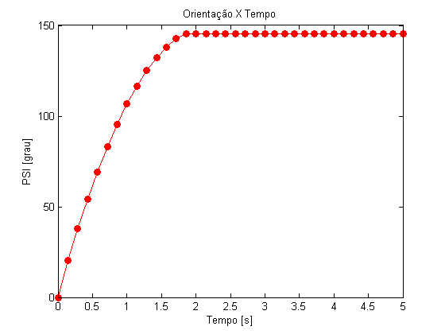 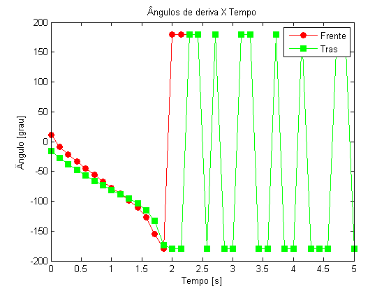 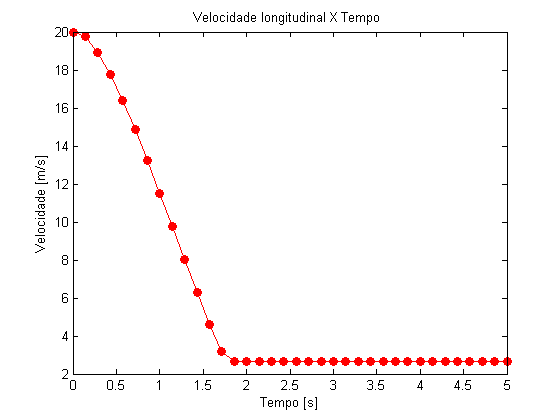 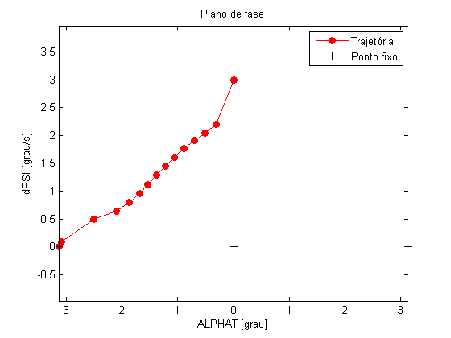 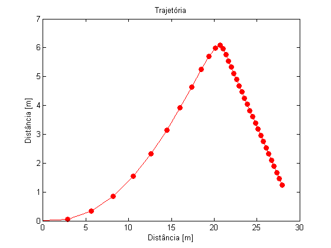 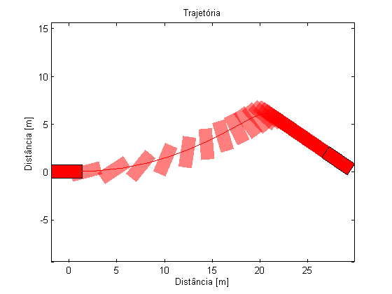
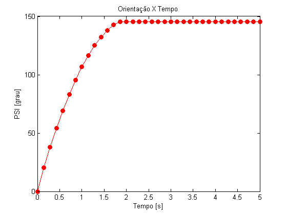 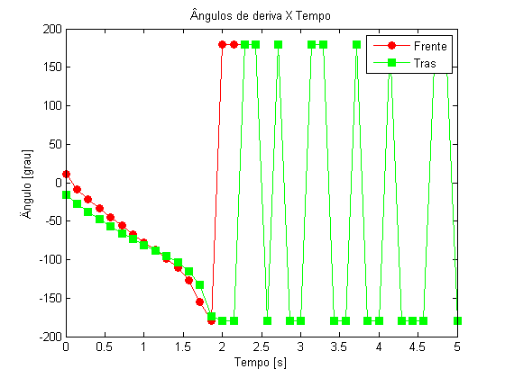 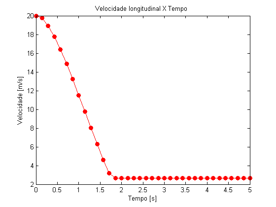 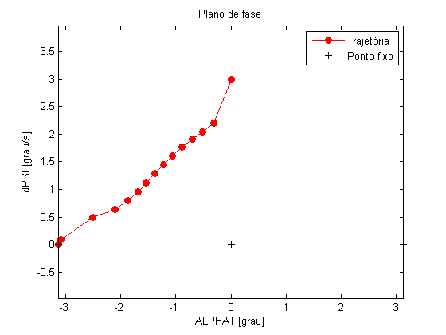 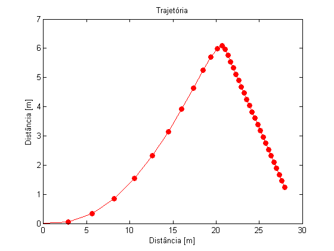 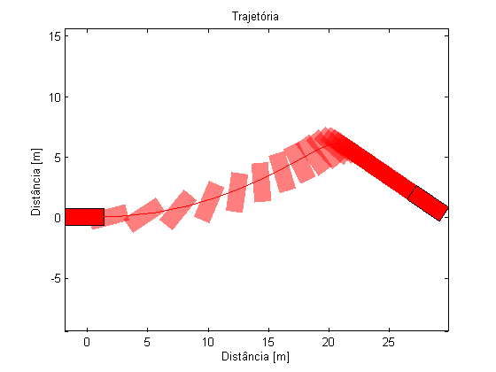 Animação
Executando o script de animação
% animacao(XOUT,TOUT,ALPHAFA,ALPHARA,VF,VR,VT,veiculoDadosVet);
Ver também
Início | Modelo veículo | Frame | seletor